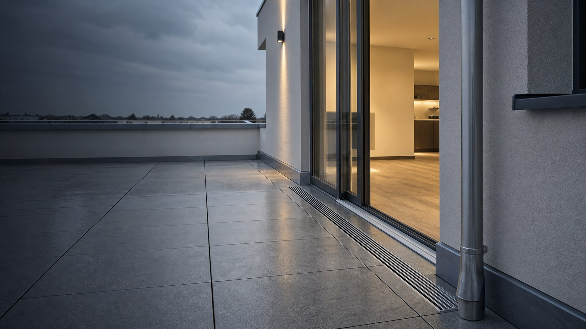
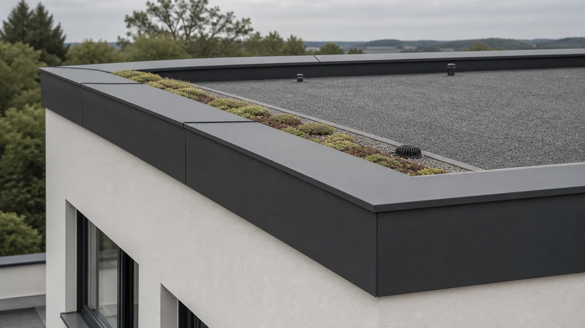

Undichte Fläche
Risse und gealterte Abdichtungen lassen Wasser unbemerkt in den Aufbau.

Balkone und Terrassen sind begehbare Dachflächen. Deshalb müssen Abdichtung, Anschlusshöhen, Gefälle und Belag als ein Aufbau funktionieren.
Wasser ist der größte Gegner von Balkon, Terrasse und angrenzender Bausubstanz.
Lose Beläge, Risse oder zu geringe Anschlusshöhen können Feuchtigkeit in den Aufbau führen. Wir planen Abdichtung und sichtbare Oberfläche gemeinsam – auch bei anspruchsvollen Tür- und Randanschlüssen.
Risse und gealterte Abdichtungen lassen Wasser unbemerkt in den Aufbau.
Wasser bleibt stehen oder läuft in Richtung Tür und Fassadenanschluss.
Frost, Feuchtigkeit und ungeeignete Untergründe lösen Platten oder Holzaufbauten.
Bestand und Gefälle bilden die kontrollierte Basis.
Fläche, Türanschluss und Ränder werden durchgehend gesichert.
Stein oder Holz wird entwässerbar und wartbar aufgebaut.
Wir verbinden die unsichtbare Abdichtung mit einer belastbaren, gut entwässerten und gestalterisch passenden Oberfläche.
Flächige Abdichtung inklusive Rand-, Tür- und Geländeranschlüssen.
Robuste Systeme für genutzte Flächen über Wohnraum, Garage oder Anbau.
Nahtlose Abdichtung komplexer Geometrien und schwer zugänglicher Übergänge.
Geordnete Ableitung über Rinnen, Abläufe und ausreichend dimensionierte Wege.
Plattenaufbauten mit Drainage und dauerhaft geeigneter Unterkonstruktion.
Hinterlüftete, zugängliche Konstruktionen mit geschützter Abdichtungsebene.

Abdichtung und Belag werden in einer Reihenfolge geplant, die Entwässerung und spätere Wartung berücksichtigt.
Schadensumfang, Untergrund und bestehende Anschlusshöhen werden bewertet.
Wasserwege, Türanschlüsse, Ränder und Abläufe werden festgelegt.
Fläche und Detailpunkte werden zu einer geschlossenen Ebene verbunden.
Die sichtbare Nutzschicht wird entwässerbar und wartungsfreundlich montiert.
Für eine sichere Zustandsbewertung und dauerhafte Sanierung ist eine Öffnung häufig notwendig. Ob vollständig oder nur bereichsweise, zeigt die Prüfung.
Beides ist möglich. Entscheidend sind Aufbauhöhe, Gewicht, Nutzung, Pflegewunsch und eine dauerhaft funktionierende Entwässerung.
Solche Details benötigen eine objektspezifische Planung mit geeigneter Entwässerung und Abdichtung. Pauschal lässt sich das erst nach Aufmaß beantworten.
Beschreiben Sie uns Fläche, Belag und sichtbare Auffälligkeiten. Die Anfrage ist bereits passend vorausgewählt.